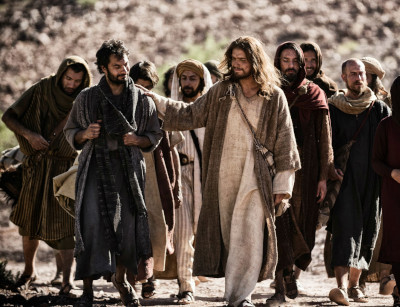

Resumo da Bíblia
A Bíblia é considerada por milhões de pessoas em todo o mundo como a Palavra inspirada de Deus. Composta por dois testamentos — o Antigo e o Novo — ela narra a história da relação entre Deus e a humanidade. O Antigo Testamento contém as Escrituras sagradas do judaísmo e fala sobre a criação, a escolha do povo de Israel, a lei dada por Deus, os profetas e o anseio por um Messias. Já o Novo Testamento se concentra na vida e obra de Jesus Cristo, seus ensinamentos, a fundação da Igreja e a promessa de sua volta. A Bíblia tem um propósito divino, buscando revelar a vontade de Deus para a salvação de toda a humanidade.
O propósito eterno de Deus, como revelado na Bíblia, é o de estabelecer um plano redentor para restaurar a humanidade ao seu estado original de comunhão com Ele. Desde a criação do mundo, Deus estabeleceu um propósito de amor e relacionamento com os seres humanos. Mesmo após a queda, com o pecado de Adão e Eva, Deus não desistiu da humanidade, mas começou a desenvolver um plano de salvação que culminaria com a vinda de Jesus Cristo. A obra redentora de Cristo na cruz é central para esse propósito, e a Bíblia revela que Deus deseja que todos sejam salvos e que vivam eternamente com Ele.
Nos tempos da Velha Aliança, Deus revelou aos homens diversos símbolos que apontavam para Cristo e sua obra futura. Desde o princípio, os sacrifícios de animais e os rituais do templo apontavam para o sacrifício perfeito de Cristo. O cordeiro pascal, por exemplo, simbolizava o sangue de Cristo, que seria derramado para a salvação da humanidade. O Tabernáculo e o Sacerdócio levítico também são vistos como tipos de Cristo, com o próprio sacerdócio de Jesus sendo superior e definitivo, como Ele mesmo declarou ao instituir a Nova Aliança. Esses símbolos na Velha Aliança preparavam o caminho para a revelação plena do Messias.
No Novo Testamento, especialmente no livro de Atos dos Apóstolos, vemos a vida apostólica da Igreja primitiva. A Igreja, fundamentada na pregação dos apóstolos, cresceu em número e profundidade espiritual, levando a mensagem de Cristo a diversas nações. Os apóstolos, que foram testemunhas diretas da vida, morte e ressurreição de Jesus, desempenharam um papel fundamental na edificação da Igreja. Suas missões foram marcadas por grandes desafios, milagres e perseguições, mas também pela coragem e fidelidade ao evangelho. A vida apostólica enfatizava a necessidade de pregar o arrependimento, a salvação pela fé em Cristo e o amor mútuo entre os crentes.
A mensagem central do livro de Atos e da vida apostólica é a expansão do Reino de Deus na terra. A Igreja primitiva, guiada pelo Espírito Santo, enfrentou muitos desafios para cumprir a missão que Jesus havia confiado: ser testemunhas de Cristo "até os confins da terra". Os apóstolos estabeleceram igrejas, batizaram novos crentes e ensinavam sobre a vida em Cristo, formando uma comunidade que compartilhava tudo em comum. A unidade, a oração, o ensino das Escrituras e a fraternidade entre os membros eram marcas essenciais dessa comunidade. A perseguição, embora difícil, não impediu a propagação do evangelho.
A volta de Cristo é um tema central na Bíblia, especialmente no Novo Testamento, onde se fala sobre o retorno glorioso de Jesus. Jesus prometeu que voltaria para julgar os vivos e os mortos e estabelecer seu Reino eterno. O livro de Apocalipse descreve o fim dos tempos, com a derrota definitiva do mal e a criação de um novo céu e uma nova terra. A volta de Cristo será um evento transformador, em que todos os fiéis serão reunidos com Ele em glória. Esse evento é aguardado com esperança pela Igreja, que vive na expectativa da consumação do plano de salvação e da restauração completa de todas as coisas.
O retorno de Cristo também carrega consigo um chamado à vigilância e preparação. Jesus, em suas parábolas, exortou seus seguidores a estarem prontos para sua vinda, vivendo de maneira fiel e obediente. A promessa de Sua volta é uma motivação para a Igreja viver com propósito e urgência, proclamando o evangelho até que Ele retorne. A Bíblia ensina que a salvação é para todos, mas também fala sobre a responsabilidade de cada pessoa em responder ao chamado de Deus. A volta de Cristo será, para os que creem, um momento de grande alegria e triunfo, mas também de juízo para aqueles que rejeitam a salvação.
Em resumo, a Bíblia é uma revelação de Deus sobre seu plano eterno para a humanidade. Desde os símbolos da Velha Aliança, que apontam para Cristo, até a vida apostólica da Igreja primitiva, ela nos conduz à compreensão de que o propósito de Deus é restaurar a humanidade à comunhão com Ele. A volta de Cristo é o evento culminante desse plano, e a Igreja, enquanto aguarda esse momento, deve viver fielmente, proclamando o evangelho até que Ele retorne em glória.